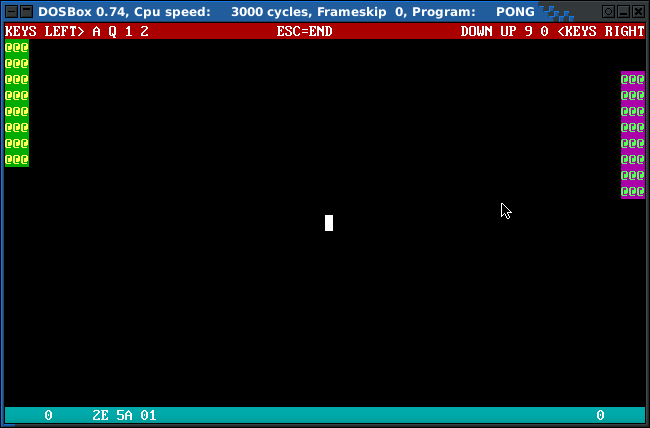

x86pong
x86pong ist ein kleines Pong-Spiel, welches unter DOS, DOSBOX, Bare-Metal-PCs usw. läuft. Es benutzt keinerlei DOS-Calls und nur ein paar BIOS-Interrupts.
Gesteuert wird mit den Tasten [AQ] und [Up/Down] für Links/Rechts.
Die Farben der Paddles können mit [12] und [90] geändert werden.
Das komplette Spiel ist gerade mal ~2500bytes gross.
Ausserdem gibt's ein Floppy-Image mit com-Loader, damit kann ein Rechner direkt von Floppy mit x86pong gestartet werden. Kein Betriebssystem nötig!
https://github.com/spacerace/x86-pong
Dort enthalten ist der Quellcode, pong.com (Fertiges Spiel), floppy.img (Spiel+COM-Loader), screenshot, ...
